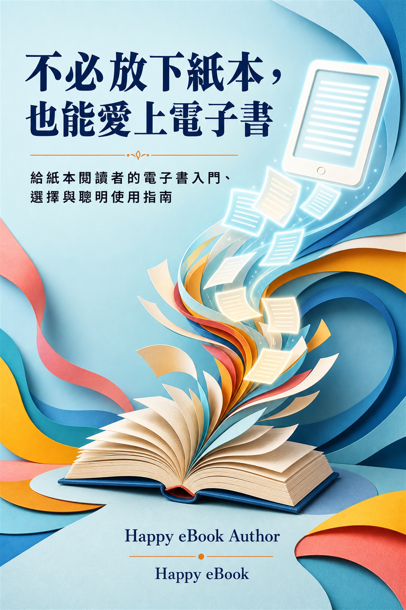

電子書
不必放下紙本，也能愛上電子書
給紙本閱讀者的電子書入門、選擇與聰明使用指南

不必放下紙本，也能愛上電子書
給紙本閱讀者的電子書入門、選擇與聰明使用指南
你喜歡紙張的觸感、翻頁的節奏與書架上的收藏，卻也想知道電子書是否能讓閱讀更方便嗎？這本書不要求你放棄紙本，而是陪你多學會一種讀書的方法。 全書從紙本讀者最常遇到的疑問出發，說明電子書、電子紙、有聲書與文字轉語音的差別，協助你依照眼睛舒適度、生活情境、內容來源與預算選擇裝置和平台。你會實際學到如何調整字體與版面、查字、畫線、記筆記、整理數位書架、離線閱讀、保護帳號，以及在旅行、工作和學習中靈活搭配紙本與電子書。 書末附有購買與借閱檢查表、家人陪讀指南、問題排除地圖、電子書小辭典，以及可以直接使用的三十天閱讀實驗工作簿。無論你想放大文字、減輕攜書負擔、利用通勤時間閱讀，或讓書念給你聽，都可以從一個真實問題和一本真正想讀的書開始。
作品介紹；目前未提供購買或試閱入口